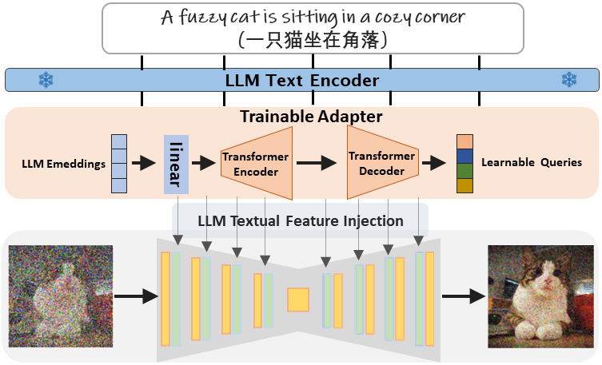
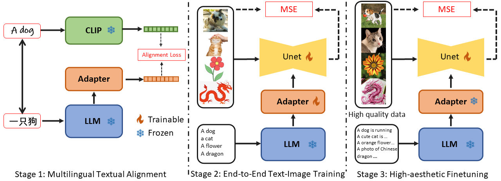

An Empirical Study and Analysis of Text-to-Image Generation Using Large Language Model-Powered Textual Representation
Zhiyu Tan1,
Mengping Yang1,
Hao Yang1 ,
Ye Qian1,
Luozheng Qin2,
Cheng Zhang3,
Hao Li4†
1InfTech,
2Soochow University,
3Carnegie Mellon University,
4Fudan University,
†Corresponding author & Project leader

[Arxiv]
[Code]
[BibTeX]
Abstract
One critical prerequisite for faithful text-to-image generation is the accurate understanding of text inputs. Existing methods leverage the text encoder of the CLIP model to represent input prompts. However, the pre-trained CLIP model can merely encode English with a maximum token length of 77. Moreover, the model capacity of the text encoder from CLIP is relatively limited compared to Large Language Models (LLMs), which offer multilingual input, accommodate longer context, and achieve superior text representation. In this paper, we investigate LLMs as the text encoder to improve the language understanding in text-to-image generation. Unfortunately, training text-to-image generative model with LLMs from scratch demands significant computational resources and data. To this end, we introduce a three-stage training pipeline that effectively and efficiently integrates the existing text-to-image model with LLMs. Specifically, we propose a lightweight adapter that enables fast training of the text-to-image model using the textual representations from LLMs. Extensive experiments demonstrate that our model supports not only multilingual but also longer input context with superior image generation quality.
Method

The main idea of our method is a lightweight but effective adapter module to align the text features of LLMs with that of the visual-aware CLIP. In this way, LLMs could capture the visual clues contained in the input prompts, thereby drive text-to-image diffusion models to produce appropriate images. Specifically, we decompose the training procedure into three distinct stages. First, we adapt the features of LLMs into diffusion training process by aligning them with those from CLIP models, only adapter is optimized in this stage. Then, we improve the synthesis quality through end-to-end text-image training. After that, the aesthetic appeal of the generated images is enhanced by further finetuning on a carefully-curated dataset. By doing so, the textual representation capabilities of LLMs can be fully activated and the model performance is well improved in terms of text alignment, synthesis quality and image aesthetics. Notably, our model is trained with a fraction of the resources required by most text-to-image diffusion models while achieving superior synthesis quality and supporting multilingual input.
To verify the effectiveness of our proposed model, we conduct extensive empirical investigation on both English and Chinese prompts datasets, it turns out our model achieves favourable zero-shot FID, CLIP-s and Aes scores under various settings. Besides, user studies demonstrate that our model could produce images that are preferred by human. Furthermore, we also conduct various and comprehensive ablation study on the proposed three training stages, which fully confirms the effectiveness of the proposed training pipeline and training stages.
Results
Our proposed model could not only produce images with high visual quality given English input prompts (left), but also enables multilingual understanding capability for various language driven T2I generation (middle), as well as grasps much longer contextual information for generation (right)

Multilingual T2I Generation
Surprisingly, our model could understand these texts well and generate images with corresponding captions. This amazing feature indicates that our model successfully integrates the powerful language understanding ability of LLMs into the T2I generation process, and fully exploit the potential of LLMs.

Long Prompt T2I Generation
Our model could capture the meaning of prompts that are much longer than 77 tokens and synthesize images that well align with prompts, whereas prior methods usually fail under such setting. This further reflects the powerful language understanding capability and synthesis quality of our method.

Comparison with Other Baselines
Qualitative comparison of our model and competing methods. For models that do not support multilingual text conditions, we translate the given prompts into corresponding language to generate images. Our proposed method could produce images with better synthesis quality, accurate text-image alignment and higher visual quality.

Acknowledgement
The project page template is borrowed from
DreamBooth.